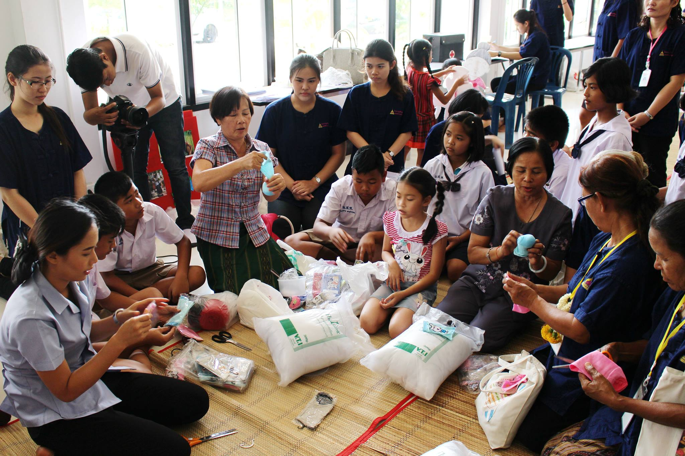
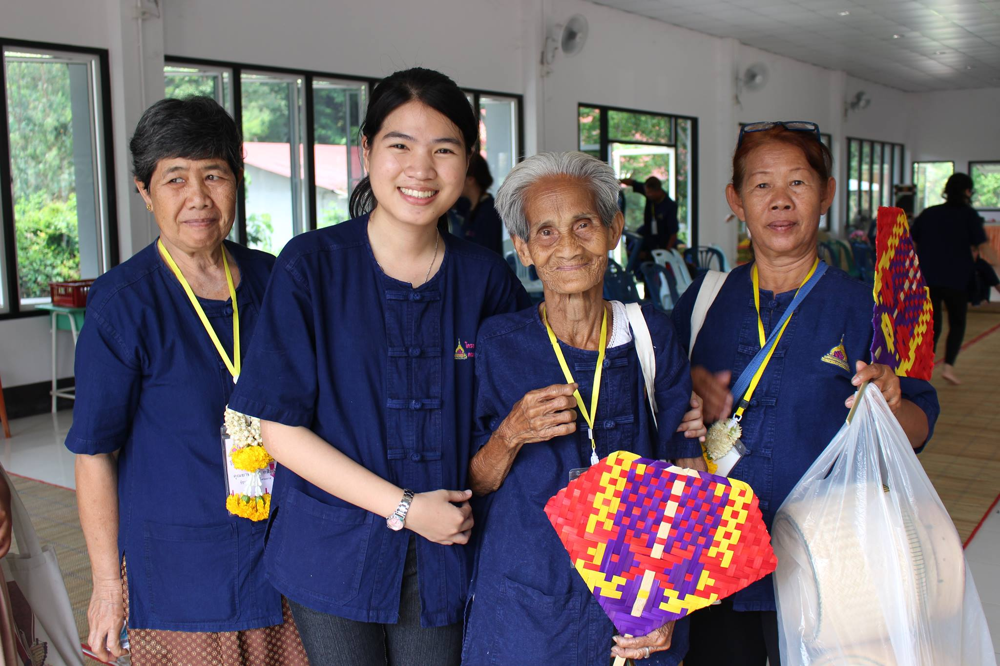

หลักการและเหตุผล
ประเทศไทยได้ก้าวเข้าสู่สังคมผู้สูงอายุแล้ว จากแนวโน้มของกลุ่มผู้สูงอายุที่เพิ่มมากขึ้นนำมาซึ่งภาวะเสี่ยง และปัญหาด้านสุขภาพเกิดภาวะพึ่งพาและทุพพลภาพตามมา อันเนื่องจากการความเสื่อมถอยด้านร่างกาย จิตใจและสังคม ทำให้ส่งผลกระทบต่อระบบการจัดบริการสุขภาพ ค่าใช้จ่ายในการรักษาพยาบาลที่เพิ่มขึ้นเนื่องจากเจ็บป่วยเรื้อรัง จากสถานการณ์ดังกล่าวจำเป็นที่จะต้องหาแนวทางในการสร้างเสริมสมรรถนะของผู้สูงอายุ การชะลอความเสื่อมถอยจากการสูงวัย โดยเฉพาะความเสื่อมถอยด้านจิตใจและสังคม จากประสบการณ์การจัดบริการส่งเสริมสุขภาพผู้สูงอายุในชุมชน พบว่าผู้สูงอายุส่วนหนึ่งยังคงมีพลังความรู้ และความสามารถ ที่มีอยู่ในตัวอย่างหลากหลาย มีความรู้ที่เป็นภูมิปัญญาไทย เช่น ความรู้ด้านการใช้สมุนไพรในการดูแลสุขภาพ ความรู้ด้านศิลปะและหัตถกรรมต่าง ๆ เป็นต้น ที่สมควรได้รับการอนุรักษ์ สืบสาน จัดเก็บและถ่ายทอด อย่างต่อเนื่องและเป็นระบบ โดยวิธีการสัมภาษณ์ พูดคุย ทั้งรายบุคคลและรายกลุ่ม ผลจากการที่ผู้สูงอายุได้รับการเยี่ยม พูดคุย และรวมกลุ่ม จะเป็นการสร้างความรู้สึกภาคภูมิใจ สร้างความรู้สึกอบอุ่นใจโดยตรง ทำให้มีความรู้สึกที่ดีต่อตนเองและสังคม ทำให้เกิดมีพลังต่อเนื่องที่จะทำกิจกรรมทางสังคมได้ และมีเพื่อนที่สามารถให้การดูแล พึ่งพาทางจิตใจและสังคม หากได้ดำเนินการต่อเนื่อง จริงจัง จะสามารถสร้างเครือข่ายพลังปัญญาอาวุโสที่มีคุณภาพ และหากมีการถ่ายทอดสู่อนุชนรุ่นหลังอาจโดยการสร้างเวทีแลกเปลี่ยนเรียนรู้ระหว่างผู้สูงวัยและเยาวชน จะนำไปสู่การสร้างมิตรภาพระหว่างวัย และ ได้ริเริ่มสร้างระบบข้อมูลคลังปัญญาอาวุโส ในพื้นที่เขตอีสานใต้ ได้อย่างมีประสิทธิภาพ

{kind=link}
ทั้งนี้ในปีงบประมาณ 2554 ได้สำรวจผู้สูงอายุภูมิปัญญาในเขตพื้นที่เทศบาลเมือง ศรีไคและบัววัด มีผู้สูงอายุภูมิปัญญา ในโครงการศึกษาสุขภาวะชุมชน(ลูกฮักลูกแพง) พบว่าผู้สูงอายุส่วนหนึ่งที่สามารถถ่ายทอดความรู้แก่เยาวชนอย่างต่อเนื่อง รวมทั้งการบูรณาการในรายวิชาการพยาบาลผู้สูงอายุ สำหรับนักศึกษาพยาบาลชั้นปีที่ 2 จะทำให้เกิดกิจกรรมการดูแลผู้สูงอายุจากสถานการณ์จริงได้เป็นอย่างดี จึงควรมีการศึกษาและรวบรวม ข้อมูล และจัดกิจกรรมเผยแพร่เพื่อทำให้เกิดการสืบสานภูมิปัญญาสู่เยาวชนอย่างต่อเนื่องและมีประสิทธิภาพ

{kind=link}
ดังนั้นเพื่อเป็นการส่งเสริมให้เยาวชนมีความเข้าใจและมีเจตคติที่ดีต่อผู้สูงอายุ รวมทั้งเป็นการถ่ายทอด และเผยแพร่ ความรู้ ภูมิปัญญาโดยผู้สูงอายุสู่เยาวชน จึงได้จัดโครงการสืบสานภูมิปัญญาและพัฒนาเครือข่ายการเรียนรู้ด้านการสูงอายุเป็นการบูรณาการงานบริการวิชาการและการทำนุบำรุงศิลปวัฒนธรรมกับการเรียนการสอนในวิชาการพยาบาลผู้สูงอายุของนักศึกษา คณะพยาบาลศาสตร์ มหาวิทยาลัยอุบลราชธานี โดยดำเนินการมาแล้ว 6 ครั้ง ในปีการศึกษา 2555 2556 2557 2558 2559 และ 2560 ตามลำดับ ซึ่งผลจากการดำเนินการที่ผ่านมานั้น พบว่าบรรลุวัตถุประสงค์ของโครงการ ส่งผลให้เกิดการพัฒนาที่ยั่งยืน และเกิดการบูรณาการสู่การเรียนการสอนได้อย่างเป็นรูปธรรม ผู้สูงอายุได้รับการส่งเสริมสุขภาพด้านจิตใจและจิตวิญญาณ ตระหนักถึงคุณค่าและความภาคภูมิใจในตนเองเป็นเวทีเครือข่ายการเรียนรู้ความรู้ด้านภูมิปัญญาไทยโดยผู้สูงอายุสู่เยาวชน เยาวชนมีความเข้าใจและเจตคติที่ดีต่อผู้สูงอายุ และทำให้เกิดการเตรียมเข้าสู่วัยสูงอายุได้อย่างมีประสิทธิภาพ เกิดการสืบสาน ถ่ายทอด และเผยแพร่ ความรู้ ภูมิปัญญาโดยผู้สูงอายุอย่างเป็นระบบ ได้ข้อมูลความรู้ภูมิปัญญาทั้งด้านผู้สูงอายุที่เป็นหน่วยคลังปัญญา และความรู้ด้านภูมิปัญญาไทย ด้านสมุนไพร ด้านศิลปะและหัตกรรม และด้านการดูแลสุขภาพอย่างเป็นองค์รวมและได้เครือข่ายการทำงานร่วมกันระหว่างผู้สูงอายุ ผู้ดูแล อาจารย์ นักศึกษาพยาบาล องค์กรท้องถิ่นและทีมสุขภาพในพื้นที่นำไปสู่การสร้างโรงเรียนเครือข่ายภูมิปัญญาผู้สูงอายุและการสร้างฐานข้อมูลเว็บไซต์ฐานข้อมูลคลังปัญญาด้านภูมิปัญญาไทยในผู้สูงอายุ คณะพยาบาลศาสตร์ มหาวิทยาลัยอุบลราชธานี ต่อไป
วัตถุประสงค์
- เพื่อรวบรวมข้อมูล ความรู้ด้านภูมิปัญญาไทยในผู้สูงอายุ
- เพื่อจัดเวทีเครือข่ายการเรียนรู้ความรู้ด้านภูมิปัญญาไทยโดยผู้สูงอายุสู่เยาวชน
- เพื่อส่งเสริมให้ผู้สูงอายุตระหนักถึงคุณค่าและความภาคภูมิใจในตนเองของผู้สูงอายุ
- เพื่อเสริมสร้างคุณค่าทางภูมิปัญญาของผู้สูงอายุ และสามารถเป็นผู้ถ่ายทอดภูมิปัญญา วัฒนธรรมท้องถิ่นให้ดำรงสืบไป
- เพื่อเป็นการสร้างเครือข่ายสืบสานภูมิปัญญาและพัฒนาเครือข่ายการเรียนรู้ในผู้สูงอายุ เป็นแหล่งฝึกประสบการณ์วิชาชีพ การบูรณาการการจัดการเรียนการสอนกับการทำนุศิลปะและวัฒนธรรม
- เพื่อเป็นการสร้างเครือข่าย การบูรณาการงานด้านผู้สูงอายุ ระหว่าง คณะ/สถาบันการศึกษา องค์กรปกครองส่วนท้องถิ่น และทีมสุขภาพในพื้นที่ กระบวนการมีส่วนร่วมของชุมชน ระบบการดูแลผู้สูงอายุที่เข้มแข็งและยั่งยืนเป็นรูปธรรม